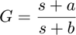
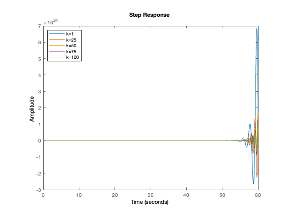
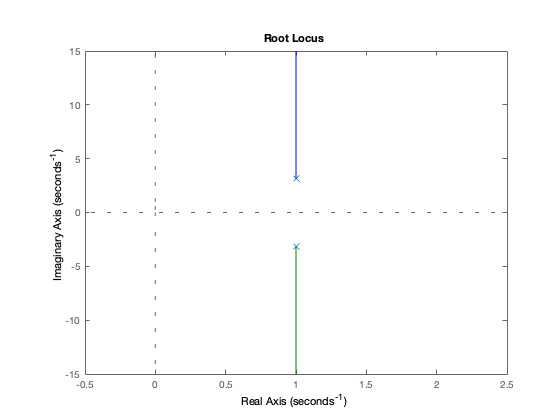

MSEM_Project_ME850A_Monojit Layek(21105049)
Contents
Question.3 Let, Discuss stabilization and improvement of transient behavior of this system using,
(a)simple feedback without a compensator (just a gain K),
(b)a PID controller, and
(c)a stable controller of the form , Explain the basic theory and give results as well.
Answer_3.a:
warning off n = [1]; d = [1,-2,11]; g = tf(n,d) % Given plant figure;hold on % checking stability for diffrent feedback value for k = 1:25:101 %display(k) step(feedback(g,k));legend({'k=1','k=25','k=50','k=75','k=100'},'Location','northwest'); end figure rlocus(g) disp('Answer: The given system is unstable for any value of k.')
g =
1
--------------
s^2 - 2 s + 11
Continuous-time transfer function.
Answer: The given system is unstable for any value of k.
 